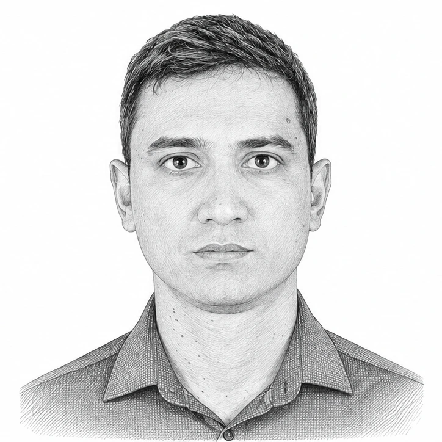
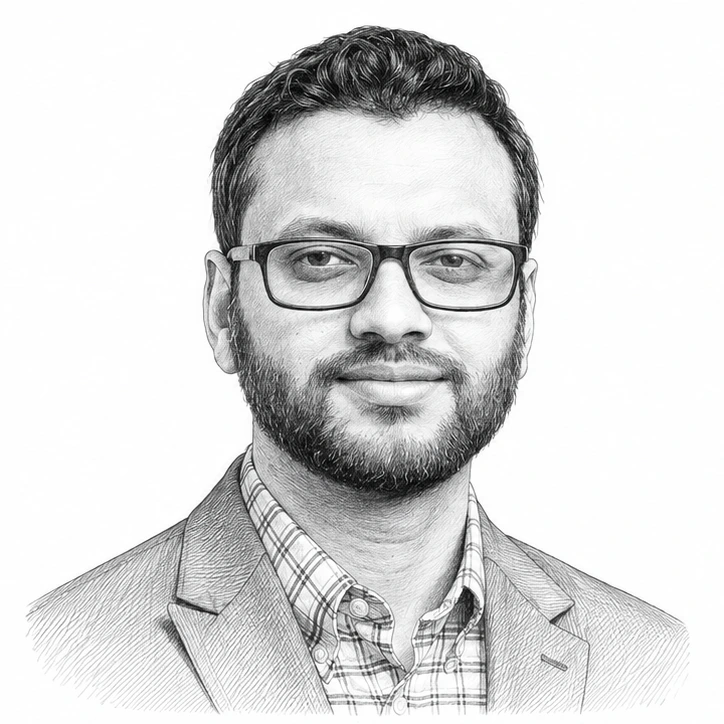
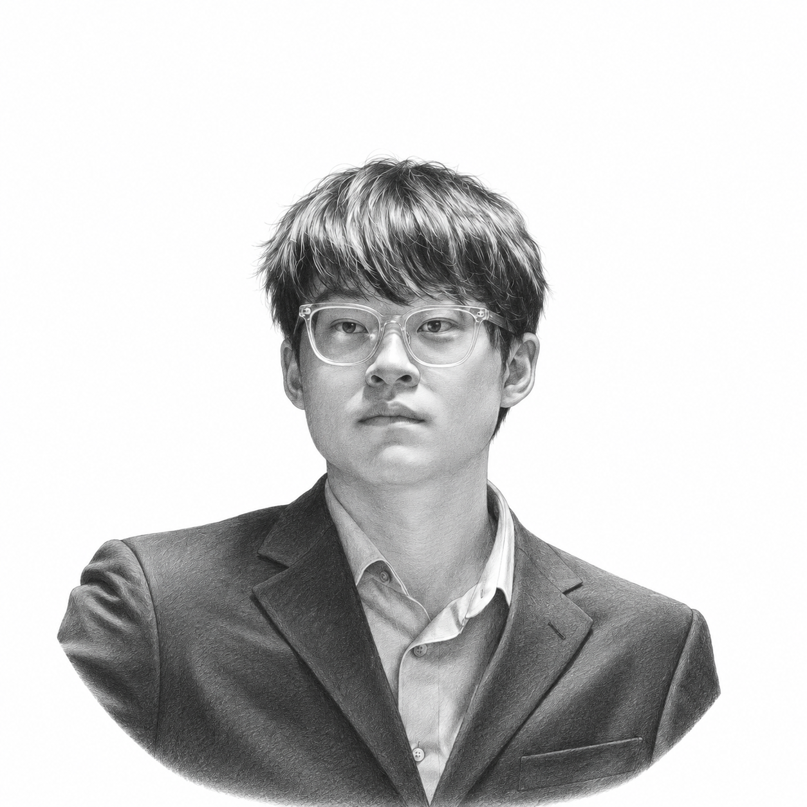
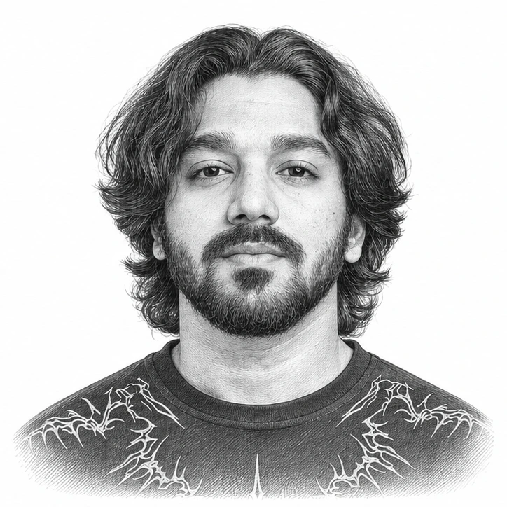
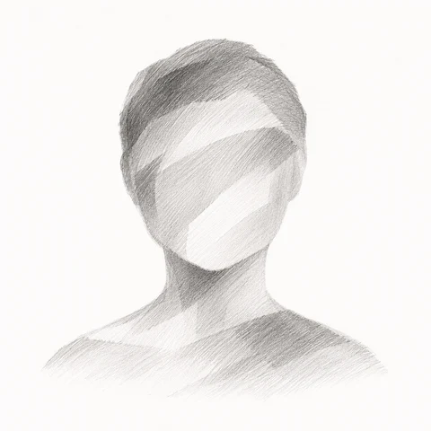

Our people
Meet the Lab
A community studying security, privacy, and trust in intelligent systems.
Director

Assistant Professor · School of Computing
Abdur Rahman Bin Shahid, Ph.D.
Southern Illinois University Carbondale
Principal Investigator & Lab Director
Graduate Researchers

Undergraduate Researchers

Undergraduate Student
David Weng
Alumni



Alumnus · M.S. project · Spring 2024
Aman Singh Thakur
Wearable sensor data collection for adversarial ML.
Alumnus · M.S. project · Spring 2024
Satwik Boyina
Hexoskin data integration for activity recognition.